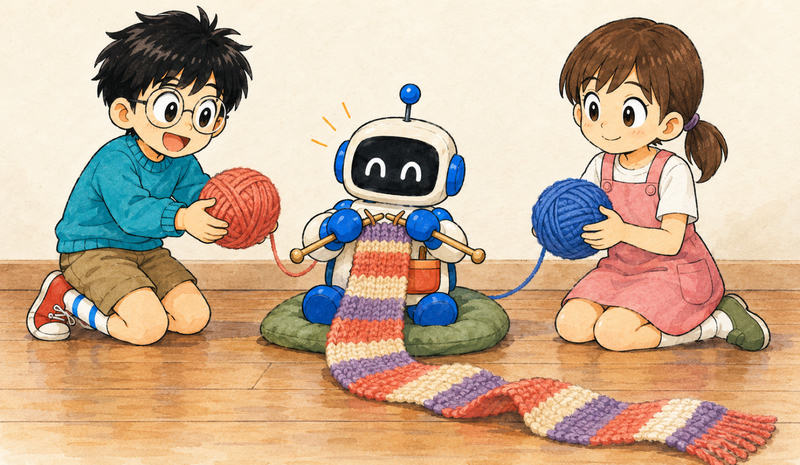

Feature 02 · ARTICLE · 2020 09
Durable Objects: A New Approach to Stateful Serverless
Today we are beginning a closed beta of Durable Objects. Workers already ran code at the edge and stored eventually-consistent data in Workers KV, but it hasn’t been possible to manage state with strong consistency, or to coordinate clients in real time, entirely on the edge. Those parts of an application still had to be hosted elsewhere. A Durable Object is an instance of a class with a globally-unique ID, living in one place in the world at a time, with its own private storage on disk. Requests about the same thing reach the same object, which coordinates them. Durable Objects are the missing piece that makes it possible for whole applications to run entirely on the edge, with no centralized origin server at all.

What a Durable Object is
Naming this was hard, because it’s not quite like any other widely-used cloud technology. The name breaks down into three parts:
Objects: objects in the sense of object-oriented programming. A class, written in JavaScript or another language, defines the public interface; an object combines that code with private state.
Unique: each object has a globally-unique identifier and exists in only one location at a time. Any Worker anywhere that knows the ID can send it messages, and they all arrive at the same place.
Durable: each object can keep persistent state on disk. Because that state is private, access is fast, and the object can safely hold a consistent copy in memory. An idle object is shut down and recreated on demand.
Storage and coordination
Storage private to an object is always co-located with it, so it can be very fast while providing strong, transactional consistency. This splits the large monolithic database into many small, logical units, with effortless scaling and zero maintenance burden.
Before, each request was randomly load-balanced to a Worker instance, so there was no way to force two clients to talk to the same Worker. Now requests on the same topic can be forwarded to the same object, which coordinates them without touching storage. Since most coordination calls for WebSockets, we’ve also added WebSocket support to Workers.
Cloudflare decides which datacenter each object lives in and can migrate it transparently. Instead of thinking about regions, you design storage to match your application’s logical data model: an object for each document, an object for each chat. Millions or billions of objects are no problem, as each has minimal overhead.
Killer app: collaborative editing
When Alice and Bob edit the same spreadsheet, every one of Alice’s keystrokes should appear immediately on Bob’s screen. Store the keystrokes in a database and poll it, and at best latency is poor; at worst transactions repeatedly fail as users on opposite sides of the world fight over the same content.
The secret is a live coordination point. Both connect to the same coordinator, typically over WebSockets. It forwards keystrokes without going through a storage layer, resolves conflicts instantly, and, since it keeps a live copy in memory, writes back to storage asynchronously. Every big-name real-time editor works this way, but standard serverless infrastructure does not make it easy to assign such coordination points. Durable Objects do, and Cloudflare creates the coordinator close to its users and migrates it as needed. We hope to see real-time collaboration become the norm across the web.
Examples
A simple counter object can be incremented, decremented, and read over HTTP. It is consistent even under simultaneous requests from multiple clients, with no increment or decrement lost, and reads are served entirely from memory. Once bound to a namespace, a particular instance can be reached from anywhere:
// Derive the ID for the counter object named "my-counter".
// This name is associated with exactly one instance in the
// whole world.
let id = COUNTER_NAMESPACE.idFromName("my-counter");
// Send a request to it.
let response = await COUNTER_NAMESPACE.get(id).fetch(request);
Our open-source chat demo uses one object per room. Users connect over WebSockets; messages are relayed directly between them, and storage holds only the history. A second kind of object rate-limits each IP, even across rooms, and stores nothing, since it’s not a big deal if a rate limiter resets on occasion. The app is a few hundred lines and scales to any number of rooms. Any individual room has a limit, since each object is single-threaded, but that limit is far beyond what a human participant could keep up with.
Other uses include shopping carts, game servers, IoT coordination, social feeds, and comment or chat widgets on static sites.
Limits and the beta
Durable Objects today are not a complete database solution. Each object sees only its own data; queries or transactions across objects take extra work. But every big distributed database is, at some low level, composed of chunks or shards. We see a future of edge databases that store each chunk as a Durable Object, and anyone can potentially build them.
Storing data is a big responsibility, so we will be making Durable Objects available gradually over the next several months. Some of what is described here is not fully enabled yet. Tell us your use case; we’ll be selecting the most interesting ones for early access.
Compared with KV and CRDTs
KV is eventually consistent, with last-write-wins semantics. It suits low-latency reads of data that doesn’t change often, and is inappropriate for state that changes frequently or must be visible worldwide immediately. Durable Objects sit at the opposite end: well-suited to transactional guarantees and immediate consistency, though clients on the opposite side of the world from an object will see moderate latency, due to the speed of light. Durable Objects will combat this by auto-migrating to live close to where they are used. We plan to use them in the implementation of Workers KV itself.
You can build CRDTs on top of Durable Objects, but Durable Objects do not require them. We feel that, for most applications, CRDTs are overly complex and too limited in what they can represent. It’s usually much easier to assign a single authoritative coordination point for each document.
Serverless state
Serverless compute works because its unit, the event, matches how we think about business logic. But serverless has been stateless: storing data or coordinating meant connecting to outside services, which re-introduced the operational concerns serverless was meant to avoid, including splitting databases into regions. Serverless state splits state into fine-grained pieces that match the application’s logical units: the chat room, the spreadsheet, the shopping cart. When the physical unit of storage matches the logical unit of state, Cloudflare can take responsibility for scalability and regionality.
This is what Durable Objects do.